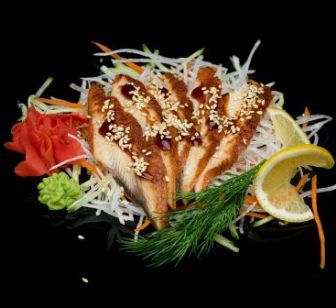
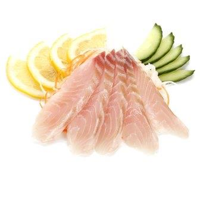
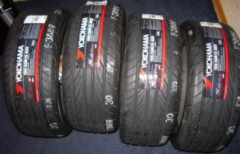

Cашими
|  | УнагиГотовятся из поджаренного угря, покрытого устричным соусом и соусом терияки. |
|
|  | ХамачиОснова сашими - нарезанная ломтиками рыбка-желтохвост с прочими дарами моря. |
|
|  | Шины Yokohama 215-65-r14Готовятся из высококачественного синтетического каучука с добавлением армированных нитей. |